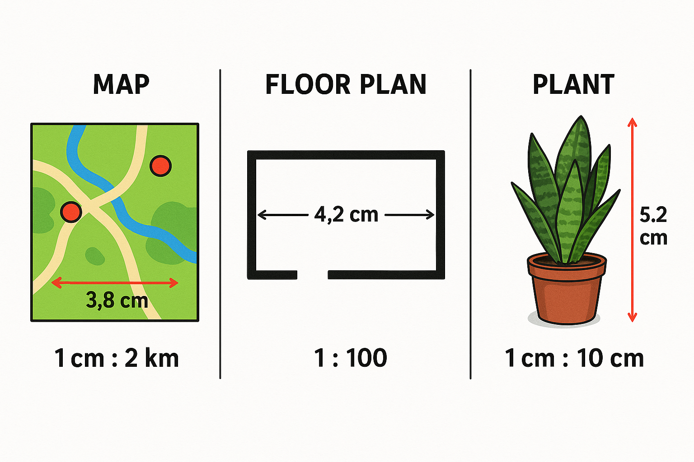
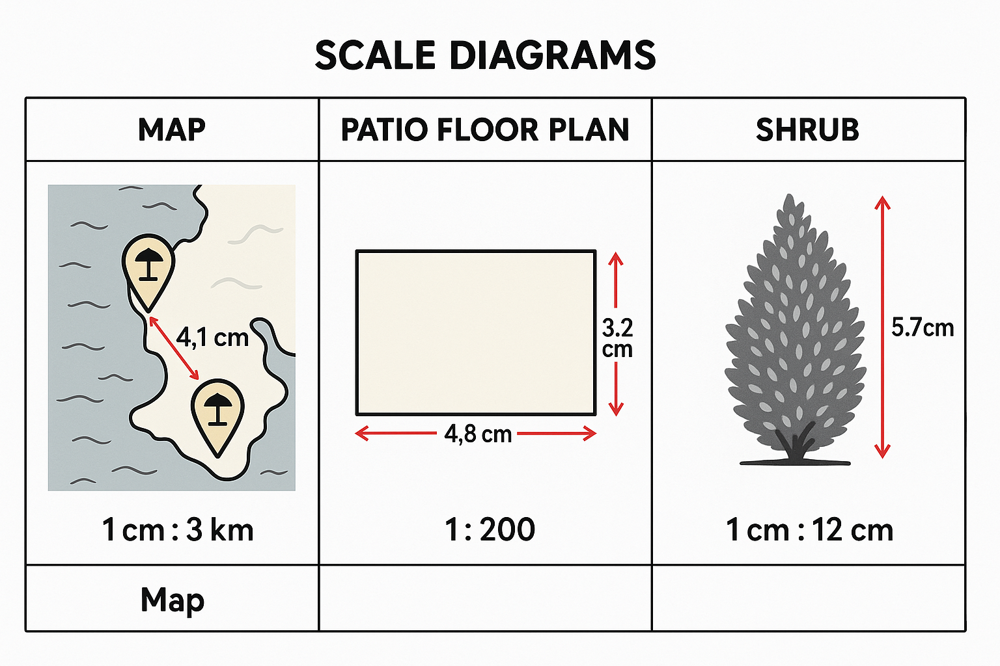
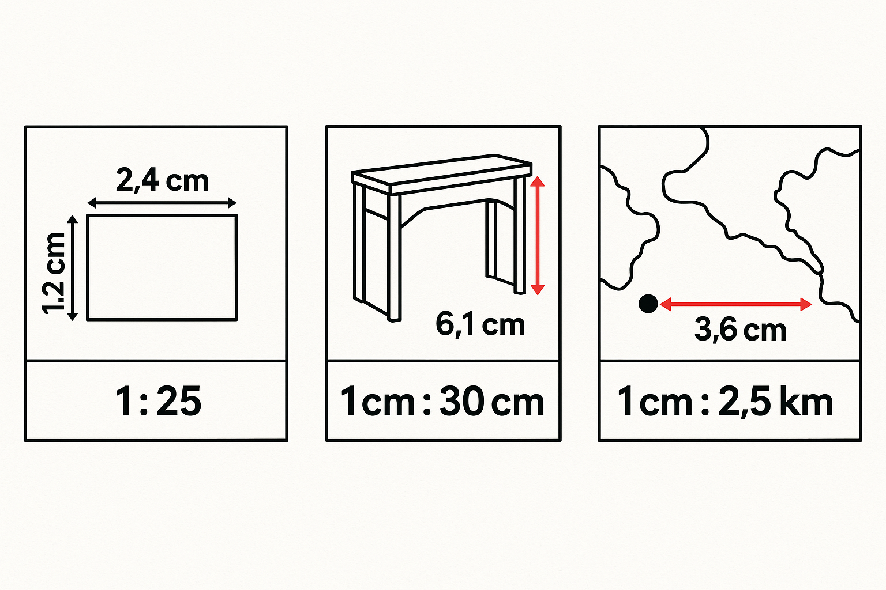

tauine
Te reo Māori terms
roa
whakatau tata
ōwehenga
Foundation
8 math tasks

- Use the map to estimate the real distance between the two marked points.
- Use the floor plan to estimate the real room length in metres.
- Use the plant measurements to estimate the real plant height in cm.
- Use the route map to estimate the real distance shown.
- Use the gate drawing to estimate the real gate width in cm.
- Use the tree measurements to estimate the real tree height.
- A map scale is $1$ cm : $3$ km. A path measures $2.5$ cm on the map. Estimate the real distance.
- A photo scale is $1$ cm : $8$ cm. A fish is $4.5$ cm long in the photo. Estimate the real fish length.
Proficient
8 math tasks

- Use the map to estimate the real distance between the two marked points. Give your answer in km.
- Use the patio plan to estimate the real dimensions in metres.
- Use the plant measurements to estimate the real plant height in cm.
- Use the trail map to estimate the real trail length.
- Use the bench plan to estimate the real bench length in metres.
- Use the lizard measurements to estimate the real lizard length.
- A scale drawing uses $1:120$. A gate is drawn as $18$ mm wide. Estimate the real width in metres.
- A map scale is $1$ cm : $1.5$ km. Two points are $4$ cm apart on the map. Estimate the real distance.
Excellence
8 math tasks

- Use the sign drawing to estimate the real dimensions in cm. Then say whether doubling both drawing lengths would double the real size.
- Use the cabinet measurements to estimate the real cabinet height. Then decide whether $14$ m is clearly wrong.
- Use the map to estimate the real distance between the two marked points. Then decide whether $9$ km is a fair estimate.
- Use the river map to estimate the real river length and explain whether $12$ km is reasonable.
- Use the patio drawing to estimate the real dimensions in metres.
- Use the tower measurements to estimate the real tower height and round to the nearest cm.
- A student says a gate drawn as $1.6$ cm on a $1:200$ scale must be $1.6$ m wide. Explain the mistake and give a better estimate.
- A photo scale is $1$ cm : $30$ cm. An object is $6.1$ cm tall in the photo. Estimate the real height and state it in metres.